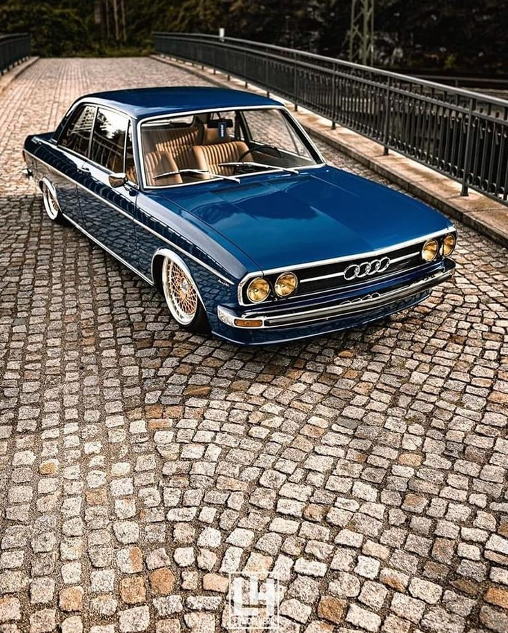
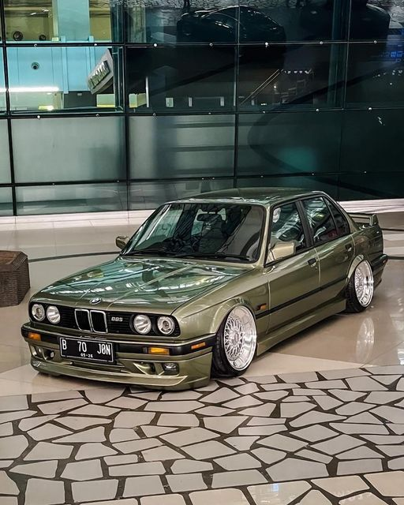

POLO Stance
The Volkswagen Polo Stance model is a striking blend of compact design and sporty appeal. With its clean lines and well-proportioned body, the Polo Stance radiates a sense of understated sophistication. Its lowered suspension and perfectly sized wheels contribute to a more aggressive and poised look. The front grille, ...

AUDI 80 B3 Stance
The Audi 80 B3, renowned for its sleek and sophisticated design, exudes a captivating stance that effortlessly combines timeless elegance with a touch of sportiness. Its smoothly contoured lines and well-proportioned body create a sense of balanced refinement, while the subtly flared wheel arches and aerodynamic silhouette convey a subtle sense of ...

325is BMW
The BMW 325is, in its stance model, is a true embodiment of precision and athleticism. With its low-slung profile, sculpted lines, and aggressive stance, this iconic coupe exudes a sense of dynamic elegance that's hard to miss. Its classic BMW kidney grille and bold, expressive headlights set the tone for a design that's as purposeful as it is captivating. ...